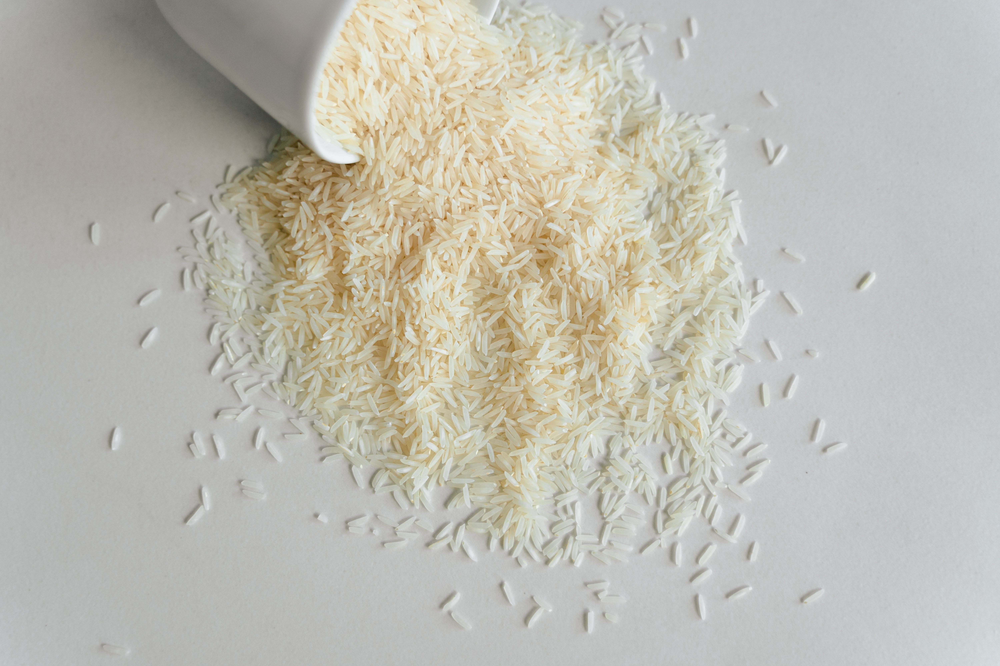

Basmati Rice

An Image of an Uncooked Basmati Rice. I love Basmati Rice, it's my favourite food and can be cooked in different ways.
I want to prepare what we call a Nigerian Jollof Rice.
Ingredients
- Groundnut Oil
- Onions
- Fresh Peppers
- Fresh Tomatoes
- Chicken
- Salts
- Spices
- Uncooked Basmati Rice
- Ginger
- Garlic
Steps to prepare this
- Step 1: Perboil the Rice, wash and set aside
- Step 2: Blend the fresh pepper, tomatoes, ginger, garlic and onion, boil and set them aside
- Step 3: Wash, cook and fry the chicken. Set the water from the cooked chicken aside.
- Step 4: Pour goundnut oil in an empty pot, fry sliced onion and the blended tomatoe mix for a few minutes
- Step 5: Pour the water from the cooked chicken, add all necessary spices, pour two glasses of water and cook for few minutes
- Step 6: Pour the Basmati rice and allow it cook until it's dry.
Home